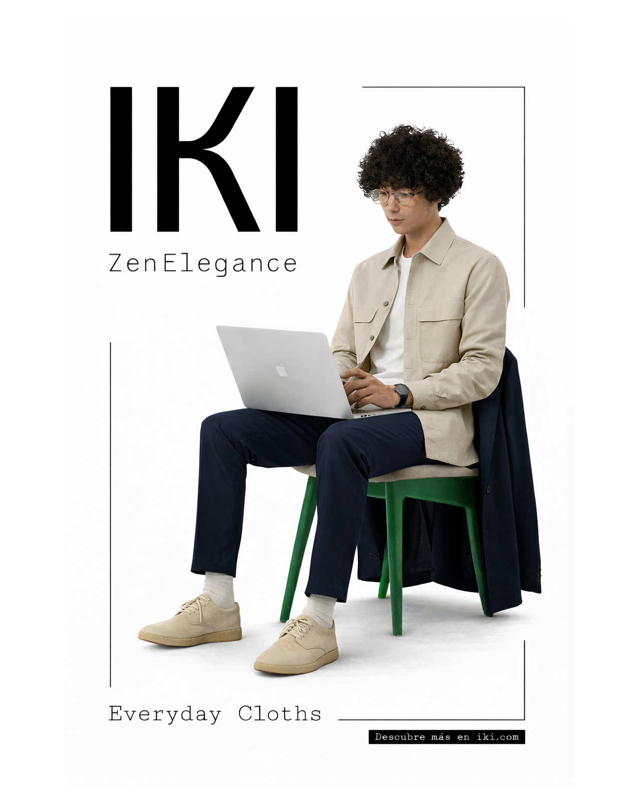
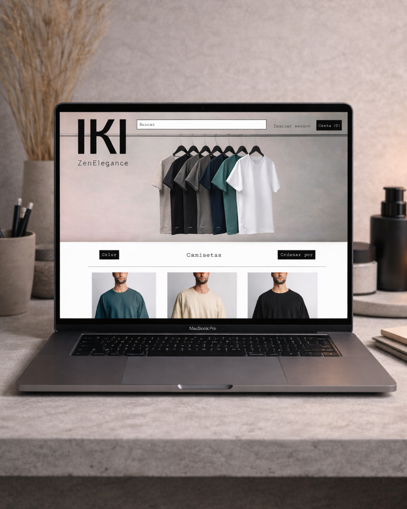

The challenge
The brief was open: invent a fashion brand, build its full identity and wrap it in a brand book that could serve as a manual for anyone picking it up later. With no real client on the other side, the easy trap was to drift into aesthetics and forget the system. I went the opposite way — treat IKI as if it had to open shop on Monday.
The starting point was the Japanese concept iki: effortless elegance, refinement that doesn't shout. From there I built logo, palette, type, voice and a set of applications — stationery, packaging, posters, OOH, web, merch — all wired to the same rules. The real test was whether the brand still read like itself outside its comfort zone.
Identity
Built on a squared proportion and a heavy type weight. Made to work the same on a storefront and shrunk down to an icon.

Key decisions
01
Square wordmark, maximum weight.
A mark that survives shrinking down to an icon without losing identity. The squared proportion simplifies everything that comes after — packaging, labels, favicon.
02
White space as material.
Treat white as a graphic element, not leftover. Every piece uses more air than it seems to need — that's why the brand reads from far away.
03
One tone, no exceptions.
A deliberate refusal to use color as a hook. Black, white and a controlled texture. Discipline before decoration: anything that doesn't add value gets cut.
Applications
From poster to packaging through stationery and digital. Every piece runs through the same logic: type, scale, air — plus a calculated point of tension so the brand never turns into furniture.




Process
01
Research
Audit of brands with minimalist codes and Japanese references. Map of which space was still free.
02
Concept
Translating iki into a visual system: hierarchy, voids, rhythm. Direction before touching type.
03
System
Logo, palette, type and usage rules. Every decision documented in the brand book.
04
Applications
Deploy across real touchpoints to test coherence. Anything that didn't hold up got rewritten.